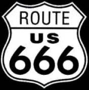

Many of the scariest-looking roads and bridges in Ohio are haunted. Click below to take a look at a few. (Also included: highway tunnels.)
Bessie Little Bridge
Dayton
Black Oak Road
Flushing
Buell Road
Cincinnati
Buckley Road
Oxford
Buttermilk Run
Morristown
Canal Road
Valley View
Church Hill Road
Lisbon
County Road 19
Kalida
County Road 175
Lake Fork
Crybaby Bridge
Newton Falls
Crybaby Overpass
Cable
Cubbage Road
Columbus
Darrow and Barrows Road
Vermillion
Dead Man's Curve
Amelia
Dug Hill Bridge
Wapakoneta
Ellis Bridge
Zanesville
Euler Road
Bowling Green
Fiddlers Green Road
North Bend
Fudge Road Bridge
Oxford
Ghormley Road
Good Hope
Greely Chapel Bridge
Lima
Gunn Road
Holland
Hisey Road
New Waterford
Hummell Bridge
Sugar Grove
I-71
Medina
Johnson Covered Bridge
Lancaster
Kelley's Bridge
Ironton
Lady Bend Hill
St. Clairsville
Leroy's Bridge
Overton
Lick Road
Cincinnati
Lipply Road
New Springfield
Lucy Run Road and Batavia Cemetery
Batavia
Morningstar Road
Germantown
Myrtle Hill Road Crybaby Bridge
Vermillion
New Lexington Road
Lancaster
Philo Bridge
Philo
Pond Run Road
New Richmond
Princeton Road
Hamilton
Railroad Bridge
Greenfield
Reformatory Road
Mansfield
Route 42 Tunnel
Ashland
Route 75 Tunnel
Ironton
The Route 513 Bridge
Quaker City
The Schrader Road Tunnel
Chillicothe
Spook Hollow
Oregonia
Staley Road
New Carlisle
Swamp Road
Pataskala
Tindle Bridge
Fremont
Trebein Road
Byron
US 27
Hamilton
Walhalla Road (Mooney's Mansion)
Columbus
Watkins Road
Columbus
Walhalla Drive
Columbus
West Water Street
Greenville
Y-Bridge
Zanesville
Zech Road
Miamisburg

Back